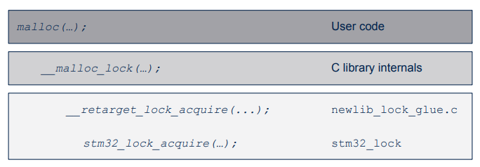
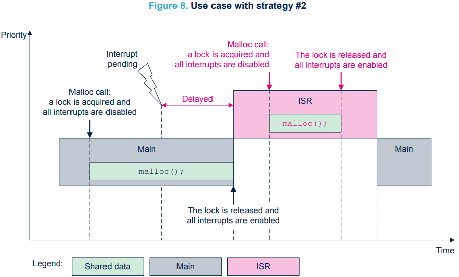
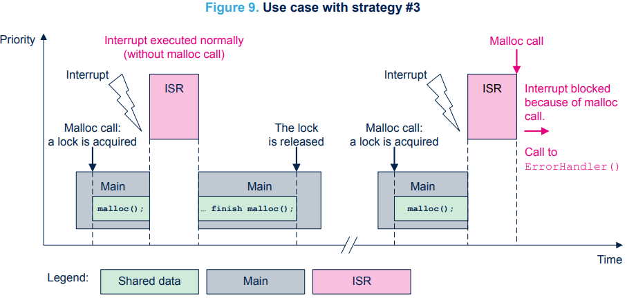
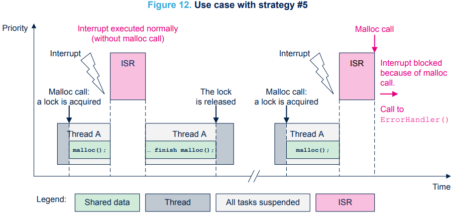

四、e2studio VS STM32CubeIDE之STM32CubeIDE线程安全解决方案
一、概述/目的
- 继续[嵌入式科普(6)你听说过FreeRTOS heap6吗？]话题分享
- 介绍STM32CubeMX和STM32CubeIDE实现的线程[安全解决方案]
- 同时强调线程安全的[重要性]：裸机和RTOS都可能存在；MDK、 EWARM、STM32CubeIDE都可能存在
- [资料来源]：AN5731:STM32CubeMX and STM32CubeIDE thread-safe solution:
https://www.st.com/content/ccc/resource/technical/document/application_note/group2/de/c7/d1/5c/ca/34/4c/bc/DM00826986/files/DM00826986.pdf/jcr:content/translations/en.DM00826986.pdf
二、原因和办法
- 线程安全问题的根本原因在于多个线程同时访问共享数据时可能导致数据不一致，
- 处理办法是使用同步机制（如互斥锁、信号量）确保在同一时刻只有一个线程可以访问共享数据
三、线程安全问题的描述
- RTOS应用：RTOS中的两个线程或任务或一个中断服务例程（ISR）
- 裸机应用：主线程被ISR中断，这也被视为第二个执行线程
- malloc()、free()、printf()、strtok()....
- usb class、网络编程、算法....
- 链表....


四、STM32解决方案
- c库重定向
 - stm32_lock.h、newlib_lock_glue.c（dlib_lock_glue
.c、armlib_lock_glue.c）、stm32_lock_user.h - 4中策略5个设定

4.1 通用策略
- 通用策略#1：自定义实现。
如果在STM32CubeMX中禁用了FreeRTOS™，则会自动选择策略#2。
如果在STM32CubeMX中启用了FreeRTOS™，则会自动选择策略#4。 - 通用策略#2：允许从中断中使用锁。
- 通用策略#3：拒绝对中断使用锁。
4.2 RTOS策略
- FreeRTOS策略#4：允许来自中断的锁使用。
- FreeRTOS策略#5：拒绝来自中断的锁使用。

4.3 策略的讲解
4.3.1 裸机应用(策略2、3)


4.3.2 RTOS应用(策略4、5)
.png)
.png)

五、关键源码
The Red Hat newlib C Library:
https://sourceware.org/newlib/libc.html
#elif STM32_THREAD_SAFE_STRATEGY == 2
/*
* Allow lock usage from interrupts.
*/
/* Private defines ---------------------------------------------------------*/
/** Initialize members in instance of <code>LockingData_t</code> structure */
#define LOCKING_DATA_INIT { 0, 0 }
/* Private typedef ---------------------------------------------------------*/
typedef struct
{
uint8_t flag; /**< Backup of PRIMASK.PM at nesting level 0 */
uint8_t counter; /**< Nesting level */
} LockingData_t;
/* Private functions -------------------------------------------------------*/
/**
* @brief Initialize STM32 lock
* @param lock The lock to init
*/
static inline void stm32_lock_init(LockingData_t *lock)
{
STM32_LOCK_BLOCK_IF_NULL_ARGUMENT(lock);
lock->flag = 0;
lock->counter = 0;
}
/**
* @brief Acquire STM32 lock
* @param lock The lock to acquire
*/
static inline void stm32_lock_acquire(LockingData_t *lock)
{
uint8_t flag = (uint8_t)(__get_PRIMASK() & 0x1); /* PRIMASK.PM */
__disable_irq();
__DSB();
__ISB();
STM32_LOCK_BLOCK_IF_NULL_ARGUMENT(lock);
if (lock->counter == 0)
{
lock->flag = flag;
}
else if (lock->counter == UINT8_MAX)
{
STM32_LOCK_BLOCK();
}
lock->counter++;
}
/**
* @brief Release STM32 lock
* @param lock The lock to release
*/
static inline void stm32_lock_release(LockingData_t *lock)
{
STM32_LOCK_BLOCK_IF_NULL_ARGUMENT(lock);
if (lock->counter == 0)
{
STM32_LOCK_BLOCK();
}
lock->counter--;
if (lock->counter == 0 && lock->flag == 0)
{
__enable_irq();
}
}